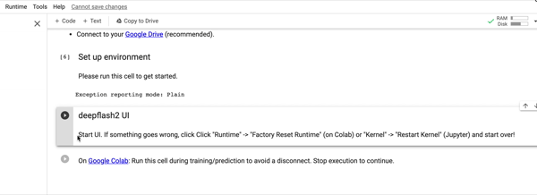

---

title: Workflow


keywords: fastai
sidebar: home_sidebar


nb_path: "nbs/workflow.ipynb"
---
<!--

#################################################
### THIS FILE WAS AUTOGENERATED! DO NOT EDIT! ###
#################################################
# file to edit: nbs/workflow.ipynb
# command to build the docs after a change: nbdev_build_docs

-->

<div class="container" id="notebook-container">
        
    {% raw %}
    
<div class="cell border-box-sizing code_cell rendered">

</div>
    {% endraw %}

<div class="cell border-box-sizing text_cell rendered"><div class="inner_cell">
<div class="text_cell_render border-box-sizing rendered_html">
<h2 id="Using-Google-Colab:">Using Google Colab:<a class="anchor-link" href="#Using-Google-Colab:"> </a></h2><p>{% include note.html content='If not already done, we recommend you to read the “Before you get started guide” first.  ' %}</p>

</div>
</div>
</div>
<div class="cell border-box-sizing text_cell rendered"><div class="inner_cell">
<div class="text_cell_render border-box-sizing rendered_html">
<p><strong>1. For using deepflash2 in Google Colab follow this link:</strong></p>
<p>(<a href="https://colab.research.google.com/github/matjesg/deepflash2/blob/master/nbs/deepflash2.ipynb">https://colab.research.google.com/github/matjesg/deepflash2/blob/master/nbs/deepflash2.ipynb</a>)</p>

</div>
</div>
</div>
<div class="cell border-box-sizing text_cell rendered"><div class="inner_cell">
<div class="text_cell_render border-box-sizing rendered_html">
<p><strong>2. Setup Environment:</strong></p>
<p>At first you must allow google colab to run the notebook from GitHub by accepting the prompt.</p>

</div>
</div>
</div>
<div class="cell border-box-sizing text_cell rendered"><div class="inner_cell">
<div class="text_cell_render border-box-sizing rendered_html">
<p><strong>3. Connect your google drive:</strong></p>
<p>It is recommended to connect your runtime to google drive.
You can allow it with ‘y’ for yes or deny it with ‘n’ for no.</p>
<p>Go to the Url that is presented to you in the “Set up environment cell”.
There you can choose your google drive account to connect to google colab.</p>
<p>After you have successfully connected the accounts, google will present you a one time authorization code. Copy this code and enter it in the according field in the “Set up environment cell” and continue by pressing the enter key.</p>
<p>Note: The authentication key will only work with this runtime. When you close google colab you have to request a new code as described.</p>
<p>Make sure that the google drive account you use with google colab matches the one you connect to the runtime.
{% include note.html content='You can <strong>reset the runtime</strong> when DeepFlash2 does not respond anymore.' %}</p>
<blockquote><p>Click on runtime in the left upper toolbar and select <strong>factory reset runtime</strong>.
Then you should reload the page and start again.</p>
<p></p>
</blockquote>

</div>
</div>
</div>
<div class="cell border-box-sizing text_cell rendered"><div class="inner_cell">
<div class="text_cell_render border-box-sizing rendered_html">
<p><strong>4. Start deepflash2 UI:</strong>
{% include note.html content='You have to create a Folder Structure as described <a href="before_you_get_started.ipynb">here</a>, before starting the program.' %}
When you run this cell, the UI opens. At first click “Select Project Folder”. 
This unfolds your google drive main directory.</p>
<p>There you can browse through the folders and select the correct folders.
After that hit Save. Now the selected folder is connected to deepFlash2.</p>
<p>The select folder tab will change to the name of the selected folder.
If you want to change the folder, click this button again.</p>

</div>
</div>
</div>
<div class="cell border-box-sizing text_cell rendered"><div class="inner_cell">
<div class="text_cell_render border-box-sizing rendered_html">
<p><strong>5. GT Estimation</strong></p>
<p>5.1. Expert Annotations:</p>
<p>You can estimate the ground truth by selecting images that are segmented beforehand by different experts. We recommend at least twelve different images from three different experts. After you have selected the desired data, you can press Load Data.
//Upload Data -&gt; link zur einer Format und technical terms übersicht (further reading)
//Sample Data</p>
<p>5.2. Ground Truth Estimation:</p>
<p>When you have uploaded the images you can start the ground truth estimation by selecting one of the presented algorithms.
At the time of writing you can select between STAPLE and Majority Voting.</p>
<p>We recommend the STAPLE Algorithm when:</p>
<ul>
<li>the experience of experts that have annotated the images vary or is unknown</li>
<li>you need more precise results when compared with the Majority Voting Algorithm</li>
</ul>
<p>We recommend the Majority Voting Algorithm when:</p>
<ul>
<li>Use this algorithm if you can be sure that the expert annotations have no repeated errors.</li>
</ul>
<p>When the estimation is finished you can download the ground truth images for further use in training. If you proceed with training, deepFlash2 will automatically select them for you.</p>

</div>
</div>
</div>
<div class="cell border-box-sizing text_cell rendered"><div class="inner_cell">
<div class="text_cell_render border-box-sizing rendered_html">
<p><strong>6. Training the model</strong></p>
<p>In this step you will create a model that you can use to automatically annotate new images.</p>
<p>6.1 Data</p>
<p>First, you have to provide training images. These should be unsegmented and contain the objects you want the neural network to find.
Second, you have to offer segmentation masks you have to create beforehand.
DeepFlash2 automatically recognizes the number of masks you have provided.<br>
Third, you have to select a number of classes. The number of classes to choose depends on the characteristics of the segmentation. 
E.g., two for binary segmentation (foreground and background class).
Fourth, you can provide instance labels. This step is optional.</p>
<p>6.2 Ensemble Training
{% include note.html content='We recommend that you use 70% of your image data for model training and reserve 30% for later &gt;validation. DeepFlash2 will automatically split the images you provide for you.' %}
You can use the Ensemble training to optimize the results.
First choose a number of models within an ensemble. 
Depending on the data, ensembles should at least have three models.
If you are experimenting with custom train settings, try only one model first.</p>
<p>6.3 Validation</p>
<p>Note: We recommend that you reserve 30% of your image data for validation.</p>
<p>Here you can validate the performance of the model you have trained before with unsegmented images.</p>

</div>
</div>
</div>
<div class="cell border-box-sizing text_cell rendered"><div class="inner_cell">
<div class="text_cell_render border-box-sizing rendered_html">
<p><strong>7. Prediction</strong></p>
<p>In this section you can use a model to segment new images and evaluate the
precision.</p>
<p>7.1 Data and Ensemble</p>
<p>First you have to upload the images you want the model to work on.
Second you have to select the model or model ensemble  you want to apply on the images. If you have used deepFlash2 to train the model, it will automatically select the model/s in the</p>
<p>7.2 Prediction and Quality Control</p>
<p>Here you can run the prediction and download the results.
You can enable test-time augmentation for prediction (more reliable and accurate, but slow).</p>
<p>If errors occur at any point, refer to the “common problems” section for help.</p>

</div>
</div>
</div>
</div>
 

